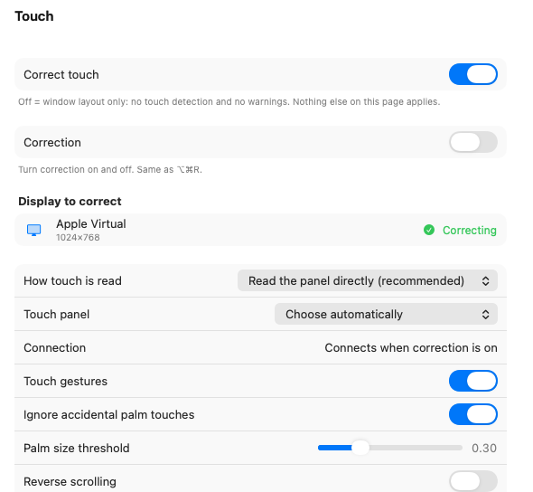

Turn an external touch panel 90° and your finger no longer lands where the pointer goes. TouchRotator corrects the coordinates — and puts display settings and window layouts in the menu bar while it is there.
macOS 13 or later · Signed with an Apple Developer ID and notarized by Apple

Corrects the coordinates of a panel you have turned on its side. It reads the panel's own USB signal, so your trackpad and mouse are untouched.
Resolution, brightness, mirroring and rotation, one click from the menu bar. No trip to System Settings.
Remembers where your windows were and puts them back when you plug the monitors in again.
JPY 1,980 one-time, tax included
Every feature is free for 14 days. If you keep it, you pay once — updates included, no subscription.
Purchases are processed by our merchant of record, who is the seller of record and sends your receipt.
Not on sale quite yet. Until then it is free to use.
| OS | macOS 13 (Ventura) or later |
|---|---|
| Mac | Apple silicon and Intel |
| Permissions | Accessibility and Input Monitoring, which macOS requires. The app walks you through them on first launch |
| Languages | Japanese · English · Simplified Chinese |
| Signing | Signed with an Apple Developer ID and notarized by Apple |
Questions, problems and refund requests: info@tsubomi.jp. We reply in English or Japanese.